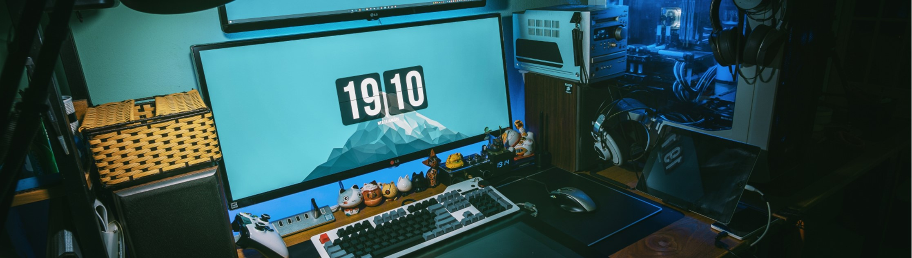

2D Graphics
This project is a simple 2D platform created in C++ with the open GL framework. It was created from the gound up over a semester (12 week) in my second year of university. The project contains:
- player is able to move backwards and forwards with acceleration
- player is able to jump
- player can attack enemies and the attack has animation
- Two enemy types
- One basic enemy able to move back and forth a set distance
- One able to appears out of the ground when the player gets close
- collectable flags that are the objectives of the levels
- Moving platforms
- Score system that increases when flags are collected or enemeies are defeated
- Two distinct levels
To move the character press the left and right arrow keys and to jump press spacebar. Finally press the up arrow to attack
the project can be found as Github